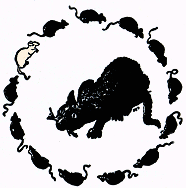

H E Dudeney Catching the Mice Puzzle
Jacky Baltes
National Taiwan Normal University
Taipei, Taiwan
jacky.baltes@ntnu.edu.tw

Dudeney's Catching the Mice
|
Catching the mice. A cat is in the center of a circle of mice. Twelve of the mice are black, one is white. "Play fair!" said the mice. "You know the rules of the game." "Yes, I know the rules," said the cat. "I've got to go round the circle, in the direction you are looking, and eat every thirteenth mouse, but I must keep the white mouse for a tid-bit at the finish. Thirteen is an unlucky number, but I will do my best to oblige you." "Hurry up, then!" shouted the mice. |
 |
Taken from D. Joyce's Website
# Implement a program to play Dudeney's Catching the Mice game
# Parameterized version: num_mice = 13, num_steps = 13
WHITE_MOUSE = 'w'
BLACK_MOUSE = 'b'
DEAD_MOUSE = 'x'
def survivor(start, total_mice=13, num_steps=13):
result = "Success"
total_mice = 13
mice = [BLACK_MOUSE] * (total_mice - 1)
mice.append(WHITE_MOUSE)
cat = start
for eaten in range(len(mice) - 1):
count = 0
while (count < num_steps):
cat = (cat + 1) % len(mice)
if mice[cat] != DEAD_MOUSE:
count = count + 1
if mice[cat] == WHITE_MOUSE:
#print("Ate white mouse at loop", eaten)
result = "Failure"
break
mice[cat] = DEAD_MOUSE
#print(mice)
return result
r = survivor(5, 13, 7 )
print(r)
for i in range(13):
print(i, survivor(i, 13, 13))
Failure 0 Failure 1 Failure 2 Failure 3 Failure 4 Success 5 Failure 6 Failure 7 Failure 8 Failure 9 Failure 10 Failure 11 Failure 12 Failure
Problem Solving Strategies
If we use search to solve this puzzle, then we must do quite a bit of work.
On average, we would have to try n/2 positions before we find the solution for a given number of mice and steps between eating
We are solving the puzzle in a forward directions (forward chaining), from the problem state to the goal
A clever solution exists if we solve the problem backward (backward chaining)
In step 12, we ate a black mouse. In step 11, the mouse must have been in 2 % 13 offset
In step 11, we ate a black mouse at offset 3 % 13
And so on
We can solve the puzzle by not having to do any search if we reason backwards from goal towards the initial state
Another Quick Solution
Another clever way to solve the puzzle is to simply start at any index, but keep going when you eat the white mouse
Then you record the relative position of the 13th mouse that you eat
If the last mouse you eat is 5 away from the white mouse, then you simply move your start location 5 positions backwards
# Implement a program to play Dudeney's Catching the Mice game
# Parameterized version: num_mice = 13, num_steps = 13
WHITE_MOUSE = 'w'
BLACK_MOUSE = 'b'
DEAD_MOUSE = 'x'
def survivor(start, total_mice=13, num_steps=13):
result = "Success"
total_mice = 13
mice = [BLACK_MOUSE] * (total_mice - 1)
mice.append(WHITE_MOUSE)
cat = start
for eaten in range(len(mice) - 1):
count = 0
while (count < num_steps):
cat = (cat + 1) % len(mice)
if mice[cat] != DEAD_MOUSE:
count = count + 1
if mice[cat] == WHITE_MOUSE:
#print("Ate white mouse at loop", eaten)
result = "Failure"
mice[cat] = DEAD_MOUSE
#print(mice)
return result, mice
import random
test_start = random.randint(0,12)
r,mice = survivor(test_start, 13, 13 )
print(r,m)
if ( r != "Success"):
count = 0
for m in mice:
if m != DEAD_MOUSE:
break
count = count + 1
start = test_start + (13 - 1 - count)
print('test_start', test_start, mice)
print('count', count, 'start', start )
r,mice = survivor(start, 13, 13 )
print(r,mice)